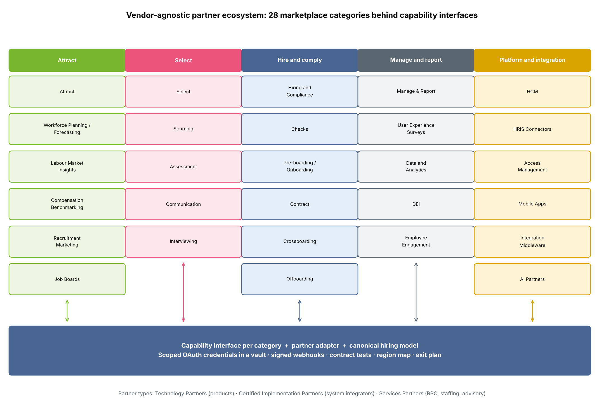

Partner Ecosystem and Vendor-Agnostic Selection (Phases B to E)
On this page
In brief. All 28 marketplace categories mapped to a vendor-neutral capability, an integration pattern, components and a wave. Names are examples only.
21.1 Why vendor-agnostic
Hiring tools change fast. OmniVerse defines what each category must do, how it connects and what data it exchanges, then chooses vendors against that definition. A different vendor can take over a category without touching the rest of the architecture.

21.2 The 28 categories
| ID | Category (marketplace) | Group | Vendor-neutral capability | OmniVerse need | Integration pattern | Canonical data exchanged | Example partners (SBB, examples only) | Components | Wave | Decision |
|---|---|---|---|---|---|---|---|---|---|---|
| PC-01 | Attract | Attract | Employer brand, career site and talent attraction services | Consistent brand in 14 countries and languages | IP-1, IP-3 | Job content, apply link, brand assets | Glassdoor; LinkedIn Talent Solutions; career-site and CMS vendors | C01, C11 | W1 | Adopt now |
| PC-02 | Workforce Planning / Forecasting | Attract | Demand forecast, headcount plan, position control | Link plan to requisitions and hiring forecast | IP-5, IP-8 | Position, headcount, forecast by role family | SAP SuccessFactors workforce planning; Visier; Orgvue; Anaplan | C14 | W3 | Wave 3 |
| PC-03 | Labour Market Insights | Attract | Supply and demand, skills scarcity, competitor hiring | Plan scarce-skill roles such as grid engineers | IP-6 | Market indices by role and region | Lightcast; LinkedIn Talent Insights; Draup | C13 | W3 | Wave 3 |
| PC-04 | Compensation Benchmarking | Attract | Pay ranges by job, grade, country | Offers inside band and competitive | IP-5, IP-6 | Pay ranges, percentile, currency | Payscale; Radford (Aon); Mercer; Salary.com | C13, C09 | W2 | Wave 2 |
| PC-05 | Recruitment Marketing | Attract | Campaigns, events, programmatic ads | Reach technicians and graduates efficiently | IP-4, IP-6 | Spend, clicks, apply starts, source | Appcast; Radancy; Phenom | C12 | W2 | Wave 2 |
| PC-06 | Job Boards | Attract | Posting and sourcing channels | Global and local boards per country | IP-1, IP-4, IP-3 | Job posting, applications, source | Indeed; LinkedIn; StepStone; Seek; Naukri; Bayt; ZipRecruiter | C11 | W1 | Adopt now |
| PC-07 | Select | Select | Umbrella for sourcing, assessment, communication and interviewing | Evidence-based, fair and fast selection | IP-2, IP-5 | Candidate reference, stage, results | SmartRecruiters native selection plus category partners below | C06, C08 | W1 | Hub native |
| PC-08 | Sourcing | Select | Find passive talent, rediscover, outreach | Scarce engineering and specialist roles | IP-3, IP-5 | Prospect profile, consent, source | SeekOut; hireEZ; Gem; Findem; LinkedIn Recruiter | C15, C07 | W2 | Wave 2 |
| PC-09 | Assessment | Select | Cognitive, behavioural, skills and simulation tests | Validated tests by role family; safety-critical judgement | IP-2, IP-9 | Order, package, result band, report link | SHL; Criteria; Harver; TestGorilla; Codility; HackerRank; Plum | C16 | W2 | Wave 2 |
| PC-10 | Communication | Select | Chat, SMS, WhatsApp, email, scheduling bots | 24x7 multilingual candidate contact | IP-1, IP-3, IP-5 | Messages, opt-in, delivery status | SmartRecruiters Winston Chat; Paradox; Sense; Twilio; Gupshup | C02, C10 | W1 | Adopt now |
| PC-11 | Interviewing | Select | Video, AI-assisted and live interviewing, scheduling | Fast screening of volume roles; consistent panel interviews | IP-2, IP-9 | Invitation, recording link, advisory scores | HireVue; Sapia.ai; Willo; Spark Hire; GoodTime; Microsoft Teams; Zoom | C17, C18 | W2 | Wave 2 |
| PC-12 | Hiring and Compliance | Hire and comply | Umbrella for checks, onboarding, contract, mobility, exit | Everything between offer and day one | IP-2, IP-5 | Order, outcome, status | See categories 13 to 17 | C21 to C28 | W2 | Hub native |
| PC-13 | Checks | Hire and comply | Criminal, education, employment, licence, sanctions, identity, right-to-work | Country packages; safety and security gates | IP-1, IP-2 | Order, consent reference, outcome and date | Sterling; HireRight; First Advantage; Checkr; Accurate; Certn; Onfido (Entrust); Jumio; regional providers | C21, C22 | W2 | Wave 2 |
| PC-14 | Pre-boarding/Onboarding | Hire and comply | Pre-start tasks, forms, welcome | Documents and tasks done before day one | IP-2, IP-5 | Tasks, documents, completion | SmartRecruiters SmartOnboard; SAP SuccessFactors Onboarding; Enboarder | C26 | W2 | Wave 2 |
| PC-15 | Contract | Hire and comply | E-signature, contract generation, employer of record | Sign offers and local contracts; hire where OmniVerse has no entity | IP-1, IP-5 | Documents, signer status, audit certificate | DocuSign; Adobe Acrobat Sign; Dropbox Sign; Deel; Remote; Oyster | C24, C25 | W1 | Adopt now |
| PC-16 | Crossboarding | Hire and comply | Internal moves and skills marketplace | Fill roles from inside first | IP-5 | Internal profile, role match | SAP SuccessFactors opportunity marketplace; Gloat; Fuel50 | C27 | W4 | Wave 4 |
| PC-17 | Offboarding | Hire and comply | Exit workflow, alumni link, rehire eligibility | Alumni as a talent source | IP-5 | Exit status, rehire flag | SAP SuccessFactors offboarding; ServiceNow HR | C28 | W4 | Wave 4 |
| PC-18 | Manage & Report | Manage and report | Umbrella for surveys, analytics, DEI and engagement | Measure and improve | IP-6 | Aggregates and events | See categories 19 to 22 | C29 to C37 | W3 | Hub native |
| PC-19 | User Experience Surveys | Manage and report | Pulse surveys for candidates and managers | Experience at each stage | IP-5, IP-6 | Survey trigger, score | Qualtrics; Medallia; Culture Amp | C29 | W3 | Wave 3 |
| PC-20 | Data and Analytics | Manage and report | Warehouse, BI, workforce analytics | One view across hub, HR core and partners | IP-6, IP-5 | Events, snapshots, KPIs | Snowflake; Databricks; Power BI; SAP Analytics Cloud; Tableau; Visier | C36, C37 | W3 | Wave 3 |
| PC-21 | DEI | Manage and report | Inclusive language and funnel parity | Fair access in every country where lawful to measure | IP-5, IP-6 | Job-ad text, aggregated funnel data | Textio; Datapeople; Diversio | C30 | W4 | Option |
| PC-22 | Employee Engagement | Manage and report | Referral, engagement, recognition | Referral hires and engagement signals | IP-3, IP-6 | Referral source, status | Culture Amp; Qualtrics EX; referral platforms | C31 | W4 | Option |
| PC-23 | HCM | Platform and integration | Employee system of record and payroll | Single source for employees | IP-1, IP-5 | Hire event, org, position | SAP SuccessFactors Employee Central and Payroll; Workday; Oracle HCM; UKG | C42 | W1 | Adopt now |
| PC-24 | HRIS Connectors | Platform and integration | Unified connectors to many HR systems | Acquired units on other HR systems | IP-5, IP-6 | Worker core data, org | Merge; Finch; Kombo | C34 | W4 | Option |
| PC-25 | Access Management | Platform and integration | SSO, provisioning, MFA | Staff access and joiner-mover-leaver | IP-7 | Authentication, user, group | Microsoft Entra ID; Okta; SAP Cloud Identity Services; Ping Identity | C38 | W1 | Adopt now |
| PC-26 | Mobile Apps | Platform and integration | Mobile and chat-tool apps for managers and candidates | Approve and give feedback anywhere | IP-1, IP-9 | Task, approval, message | SmartRecruiters mobile; Microsoft Teams; Slack | C04 | W1 | Adopt now |
| PC-27 | Integration Middleware | Platform and integration | iPaaS and API management | Mapping, monitoring, replacement | IP-5, IP-8 | All interface payloads | SAP Integration Suite; MuleSoft; Boomi; Workato; Celigo; Azure Integration Services | C32, C33 | W1 | Adopt now |
| PC-28 | AI Partners | Platform and integration | AI matching, screening, interview intelligence, assistants | Faster screening with human control | IP-1, IP-5, IP-2 | Match advice, summaries, reasons | SmartRecruiters Winston; Eightfold; Findem; Metaview; BrightHire | C19, C20 | W2 | Wave 2 |
21.3 Partner types
| Partner type | What they do | How OmniVerse uses them | Selection notes | Contract notes |
|---|---|---|---|---|
| Technology Partners | Products that connect to the hiring hub (assessment, interview, checks, job boards, analytics and more) | Provide the capability behind each category; each sits behind a capability interface | Use the selection scorecard; confirm the integration is certified or buildable on open APIs; check country and language coverage | Data-processing terms, regions, sub-processors, security certificates, audit and data-return rights, exit assistance |
| Certified Implementation Partners | System integrators trained and approved to deliver the hub | Configure the hub, build adapters, run SAP Activate workstreams, train and hand over | Ask for certified consultants named in the bid, similar energy or multi-country references, and fit-to-standard discipline | Fixed-scope phases, named key staff, knowledge-transfer obligations, step-in rights |
| Services Partners | Recruitment process outsourcing, staffing, managed services, advisory | Support surge hiring, regional sourcing, run support, change management | Prefer partners that work inside the hub so data stays in one place | Service levels, data ownership, no off-system candidate lists, audit rights |
21.4 Selection scorecard
Score each candidate vendor from 1 to 5 per criterion and multiply by the weight. Ask for the evidence shown.
| Criterion | Weight % | What good looks like | Evidence to request | Applies to |
|---|---|---|---|---|
| Functional fit to role families | 15 | Covers volume, technical, graduate and safety-critical roles in OmniVerse languages | Demo with real scenarios; reference calls | All |
| Integration maturity | 12 | Certified connector or documented open API, webhooks, sandbox and contract tests | API reference, sandbox access, marketplace listing, test results | All |
| Data protection and residency | 12 | Regional processing, sub-processor list, deletion and return on demand | DPA, region map, sub-processor register, transfer assessment | All |
| Security assurance | 8 | Independent certification and penetration test; SSO; audit log | ISO 27001 or SOC 2 report, pen-test summary | All |
| AI transparency and bias evidence | 10 | Model cards, reasons, bias tests, human control, regional switches | Documentation, test reports, audit rights | AI, assessment, interview, screening |
| Country and language coverage | 8 | Covers all required countries, languages and legal requirements | Coverage matrix | All |
| Candidate experience and accessibility | 8 | Mobile-first, accessible, quick, adjustments supported | WCAG report, usability results | Candidate-facing |
| Validity and accuracy evidence | 6 | Job-related validity, reliability, local norms; check accuracy and turnaround | Validation studies, accuracy and turnaround statistics | Assessment, checks |
| Commercial and total cost | 7 | Transparent pricing by volume; no hidden integration fees | Price book, three-year TCO | All |
| Exit and portability | 8 | Data return in open format, API export, termination assistance | Contract clauses, export sample | All |
| Support and service levels | 3 | 24x7 or follow-the-sun by region; incident process | SLA, support model | All |
| Viability and roadmap | 3 | Financial stability; roadmap aligned with open standards | Financials, roadmap briefing | All |
21.5 Multi-vendor by design
Assessment, AI interview, job boards and checks are multi-vendor: one global primary plus regional specialists, selected by role family and country. The capability interface and canonical model make this possible without extra hub configuration.
21.6 Exit plan per category
| Element | Content |
|---|---|
| Data return | Export of orders, results and reports in an agreed format within [30] days |
| Replacement | Pre-qualified alternative named per category |
| Adapter | Replacement requires a new adapter and mapping only |
| Test | Exit test once a year in the sandbox |
| Contract | Data-exit, audit and sub-processor clauses |
21.7 Disclaimer
Partner names in the register are illustrative. OmniVerse runs its own selection. Marketplace listing, certification status and regional availability must be confirmed with the vendor and SmartRecruiters at selection time.